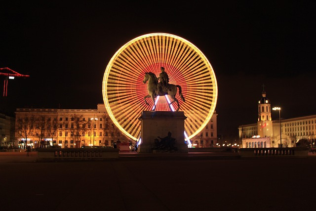
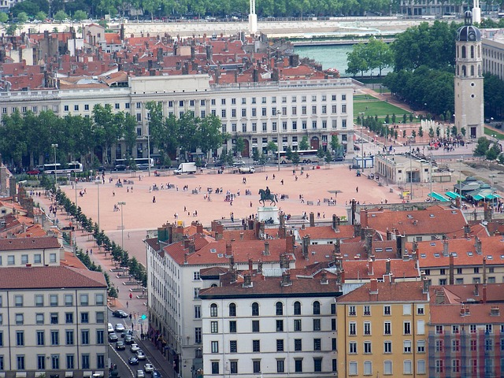
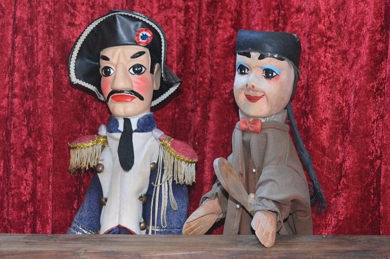
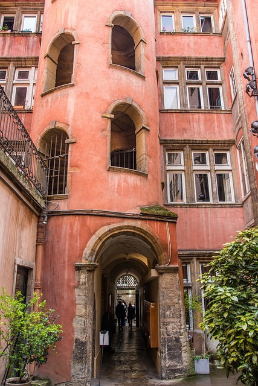
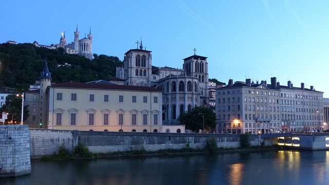
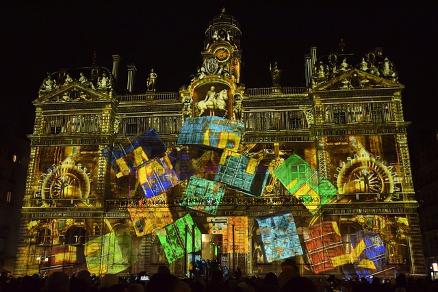
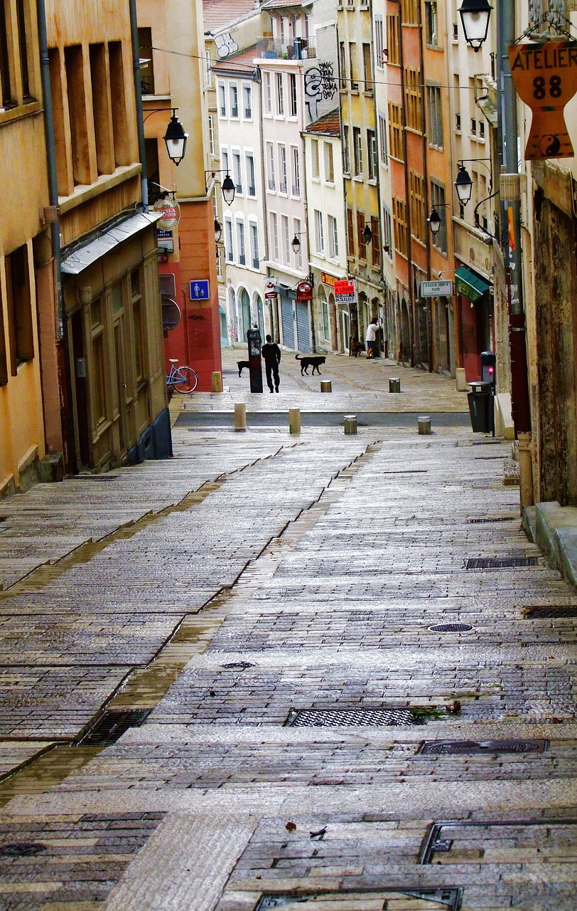
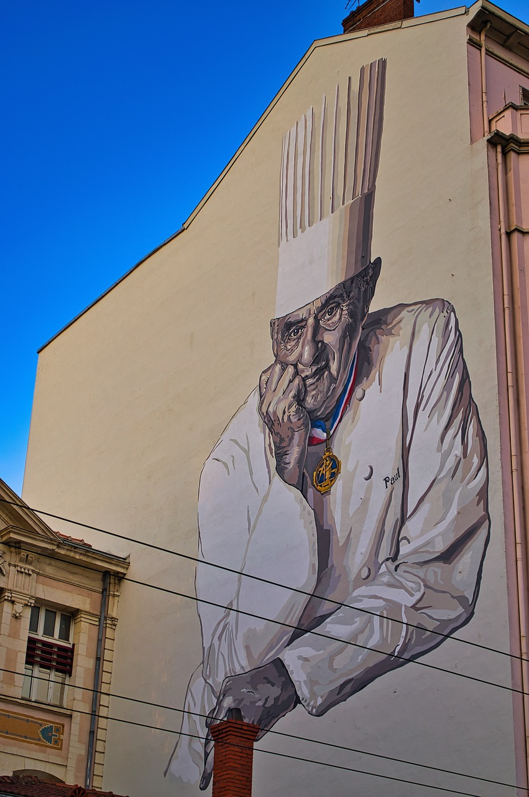
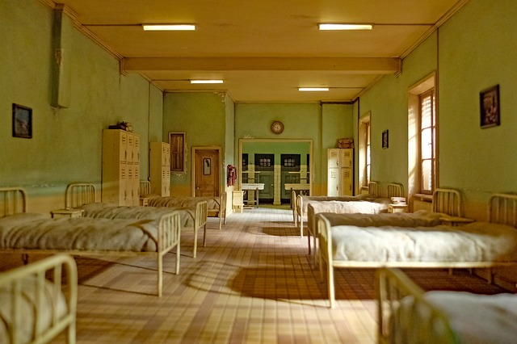

Quelle spécialité culinaire a fait la réputation de Lyon?

La cervelle de canut est une spécialité fromagère de la cuisine lyonnaise. Ce met remplaçait si bien la cervelle de mouton, trop chère pour leur maigre salaire, que son aspect rappelait quelque peu celui d'une cervelle et il constituait la nourriture ordinaire des ouvriers des soieries du XIXe siècle, que l'on appelait… « canuts » ! Vous pourrez la déguster dans les restaurants typiques appelés Bouchon Lyonnais.
Sur la Place Bellecour trône la statue de ….?
Le Monument de Louis XIV est une statue équestre en bronze de Louis XIV réalisé par le sculpteur François-Frédéric Lemot située sur la place Bellecour à Lyon, datant de 1825. Le roi ne serait venu qu'une fois à Lyon mais aurait en 1708 favorisé l'acquisition de cette place par la ville, d'où cette statue en hommage.
L'artiste, auteur de cette statue, aurait oublié un détail important, lequel?
Selon une légende urbaine persistante, Lemot se serait suicidé pour avoir oublié les étriers à la statue. En réalité, le roi Louis XIV est figuré chevauchant « à la romaine » (sans selle, ni étriers).
De quel théâtre Lyon est-il le berceau?
Guignol est une marionnette française créée à Lyon vers 1808 par Laurent Mourguet. Le terme désign également par métonymie le théâtre de marionnettes comique dont Guignol est le personnage principal,formant avec Gnafron et Madelon le trio récurrent des pièces du répertoire classique.
A Lyon si on vous propose de “prendre une traboule”… il faut comprendre :
Les traboules sont des passages piétons qui permettent de se rendre d'une rue à une autre dans certaines villes françaises. Les plus connues sont à Lyon. Les traboules lyonnaises sont généralement signalées par une lanterne au-dessus de la porte qui est allumée la nuit quand la sortie de l'autre côté est ouverte.
Comment s'appelle le quartier historique de Lyon, classé au patrimoinde de l'UNESCO?
Saint-Jean est un quartier du 5e arrondissement de Lyon. Il constitue une des trois paroisses du Vieux Lyon, avec celles de Saint-Georges et Saint-Paul. Centre historique de Lyon, périmètre sauvegardé inscrit au patrimoine mondial de l'Humanité, reconnu pour ses vieux quartiers historiques préservés comme « une des plus belles villes du monde ». Ce quartier est avec ses rues piétonnes, et son important patrimoine architectural Renaissance (le plus important du monde après Venise) le quartier touristique historique pittoresque le plus important de Lyon, et un des hauts lieux de la cuisine lyonnaise, avec ses nombreux commerces, restaurants, bouchons lyonnais, brasseries, bistros, et bars.
Pour quelle occasion les Lyonnais mettent des bougies à leur fenêtre le 8 décembre de chaque année?
La Fête des Lumières s'appuie sur la fête religieuse dite fête du 8 décembre, fête de l'Immaculée Conception, Illuminations ou encore fête de la Vierge Marie. La tradition veut que chaque famille illumine ses rebords de fenêtre avec des verres garnis d'une bougie que l'on appelle « lumignons » ou «lampions ». Cette fête est devenue un événement médiatique initié par la ville de Lyon en 1989.
Quartier de charme situé en haut d'une colline à Lyon et abritant autrefois les célèbres tisseurs lyonnais, je suis…
La Croix-Rousse, surnommée la "colline qui travaille" en référence aux canuts, et en opposition à la "colline qui prie" référençant la colline opposée de Fourvière, est une ancienne commune du département du Rhône. Ce quartier est profondément marqué par son passé de haut-lieu de l'industrie de la soie et par la révolte des Canuts, insurrection ouvrière tout à fait insolite pour l'époque qui inspirera les grands mouvements de pensée sociale du xixe siècle.
Quel chef cuisinier triplement étoilé et mondialement renommé était établi en région lyonnaise?
Trois étoiles au Guide Michelin pendant 53 ans, de 1965 à sa mort en 2018, Paul Bocuse est considéré comme un des plus grands chefs cuisiniers du xxe siècle. Formé par la mère Brazier à la cuisine lyonnaise puis par Fernand Point qu'il considère comme son mentor, c'est lui qui fait sortir les chefs de leur cuisine et contribue à leur médiatisation.
Quel discret mais incontournable musée se situe en plein coeur du quartier Saint-Jean dans une maginifque bâtisse typiquement lyonnaise?
Le musée Miniature et Cinéma, anciennement musée des miniatures et décors de cinéma, est un musée privé fondé en 2005 par l'artiste miniaturiste Dan Ohlmann. Il est situé au no 60 rue Saint-Jean à Lyon, hébergé dans le bâtiment historique classé de l'ancienne Maison des avocats.